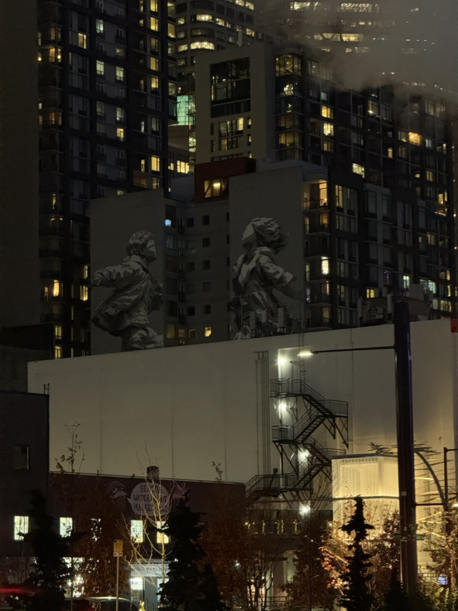
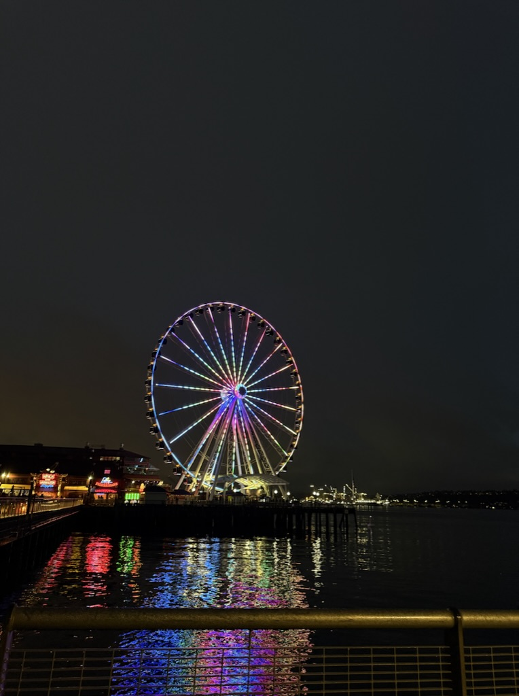

People
I begin with users’ lived experiences, goals, pressures, and contexts.
“
Whatever we put out in this world is a reflection of who we are and what we value as important.
I am an Informatics student at the University of Washington interested in UX design, research, sociology, and the social impact of technology. I design by thinking about people, access, identity, power, and the systems around them.

MY PERSPECTIVE
Digital products reflect institutions, cultural expectations, access, and the decisions of the people who create them. My sociology-informed approach helps me look beyond whether something works and ask how it shapes people’s choices and experiences.
I begin with users’ lived experiences, goals, pressures, and contexts.
I consider the institutions, policies, and technical structures surrounding a product.
I look for barriers that may make an experience confusing, unequal, or exclusionary.
I think about both intended outcomes and the consequences a design may create.
FEATURED WORK

UX RESEARCH · GAME DESIGN
A gamified job-search experience designed around motivation, progress, and student needs.
Read case study →
UX DESIGN · USER TESTING
An interactive product experience that helps users compare products and build a routine.
View project →
UX/UI DESIGN · WEB DEVELOPMENT
A responsive landing page designed for college students who want to support clean-water efforts through action and community.
View project →PLACE & PERSPECTIVE
I am interested in how everyday places, institutions, and digital systems influence belonging, access, and the choices people are able to make.


“Whatever I create, I want it to reflect the people it is meant to serve.”
Let’s Connect